Building a Reproducible Analytical Pipeline (RAP) for Simulation with Python and R
Building a Reproducible Analytical Pipeline (RAP) for Simulation with Python and R
Amy Heather
Postdoctoral Research Associate at the University of Exeter
NHS-OA Webinar 18th June 2026
Reproducibility
Reproducibility is the ability to regenerate results (e.g. tables, figures) using the provided code and data.
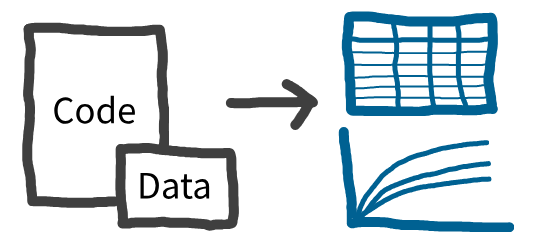
Reproducibility
Reproducibility is the ability to regenerate results (e.g. tables, figures) using the provided code and data.
Why?
- Reuse your own work more easily.
- Improve code clarity and quality
- Save time when revisiting analyses.
- Build trust.
- Help others verify and reuse your work.
Reproducible Analytical Pipelines
RAP: Systematic approach. Every step (end-to-end) is transparent, automated and repeatable.
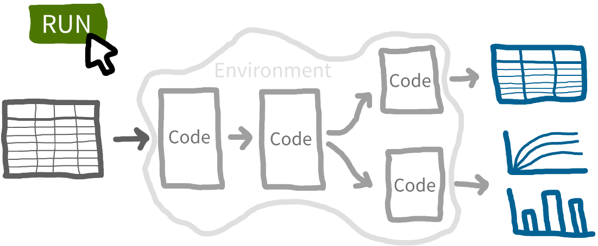
Discrete-event simulation (DES)
DES model a system as a sequence of events. For example, patients arriving, waiting, receiving treatment, and leaving.

Discrete-event simulation (DES)
DES incorporate uncertainty - instead of e.g., fixed frequency of arrivals, sample from statistical distribution.

Discrete-event simulation (DES)
DES incorporate uncertainty - instead of e.g., fixed frequency of arrivals, sample from statistical distribution.
This means each run
produces different results.
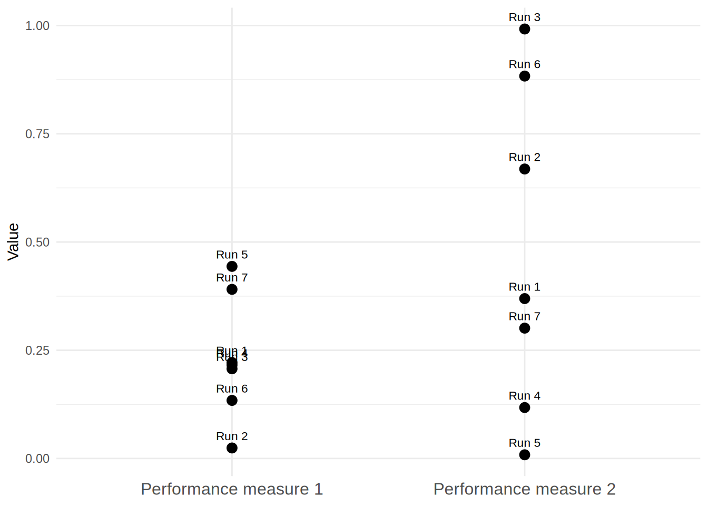
How to construct DES as RAP?
Resource 1: NHS Levels of RAP
How to construct DES as RAP?
Resource 1: NHS Levels of RAP
🥉 Baseline - RAP fundamentals offering resilience against future change.
- Data produced by code in an open-source language (e.g., Python, R).
- Code is version controlled (see Git basics and using Git collaboratively guides).
- Repository includes a README.md file (or equivalent) that clearly details steps a user must follow to reproduce the code (use NHS Open Source Policy section on Readmes as a guide).
- Code has been peer reviewed.
- Code is published in the open and linked to & from accompanying publication (if relevant).
How to construct DES as RAP?
Resource 1: NHS Levels of RAP
🥈 Silver - Implementing best practice by following good analytical and software engineering standards. Meeting all of the 🥉 baseline requirements, plus:
- Outputs are produced by code with minimal manual intervention.
- Code is well-documented including user guidance, explanation of code structure methodology and docstrings for functions.
- Code is well-organised following standard directory format.
- Reusable functions and/or classes are used where appropriate.
- Code adheres to agreed coding standards (e.g PEP8, style guide for Pyspark).
- Pipeline includes a testing framework (unit tests, back tests).
- Repository includes dependency information (e.g. requirements.txt, PipFile, environment.yml).
- Logs are automatically recorded by the pipeline to ensure outputs are as expected.
- Data is handled and output in a Tidy data format.
How to construct DES as RAP?
Resource 1: NHS Levels of RAP
🥇 Gold - Analysis as a product to further elevate your analytical work and enhance its reusability to the public. Meeting all of the 🥉 baseline and 🥈 silver requirements, plus:
- Code is fully packaged.
- Repository automatically runs tests etc. via CI/CD or a different integration/deployment tool e.g. GitHub Actions.
- Process runs based on event-based triggers (e.g., new data in database) or on a schedule.
- Changes to the RAP are clearly signposted. E.g. a changelog in the package, releases etc. (See gov.uk info on Semantic Versioning).
How to construct DES as RAP?
Resource 2: STARS DES reproducibility recommendations
How to construct DES as RAP?
Resource 2: DES reproducibility recommendations
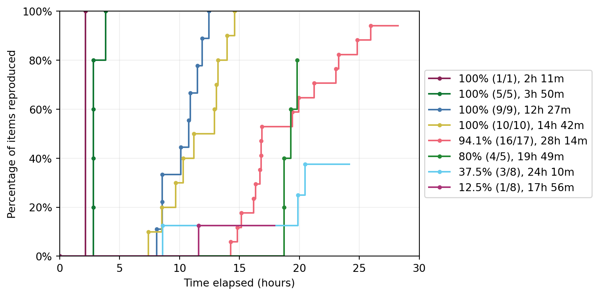
How to construct DES as RAP?
Resource 2: STARS DES reproducibility recommendations
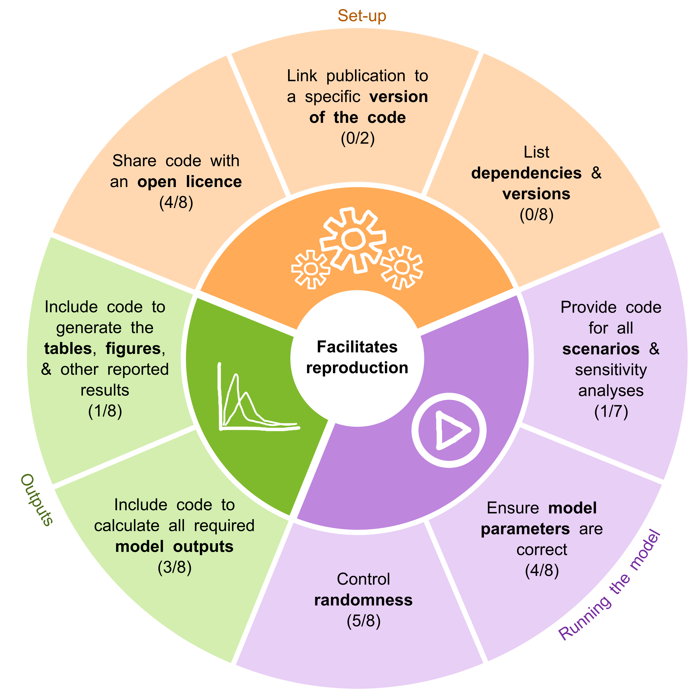
How to construct DES as RAP?
Resource 2: STARS DES reproducibility recommendations
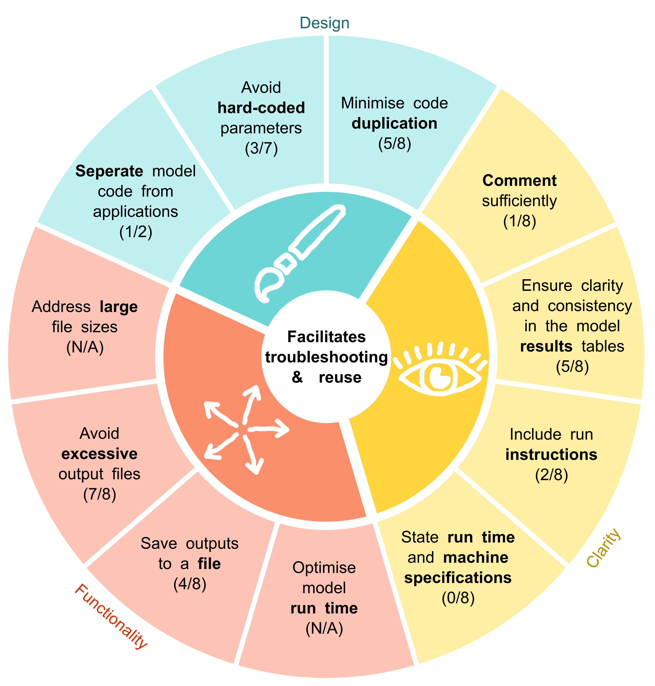
DES RAP Book
Example models
- Python M/M/s model - https://github.com/pythonhealthdatascience/pydesrap_mms
- R M/M/s model - https://github.com/pythonhealthdatascience/rdesrap_mms
- Python stroke model - https://github.com/pythonhealthdatascience/pydesrap_stroke
- R stroke model - https://github.com/pythonhealthdatascience/rdesrap_stroke
Focus of this webinar
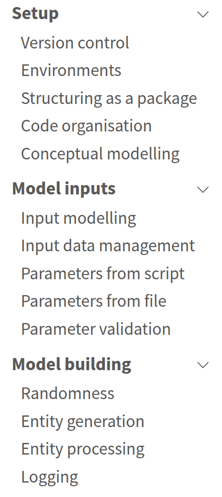
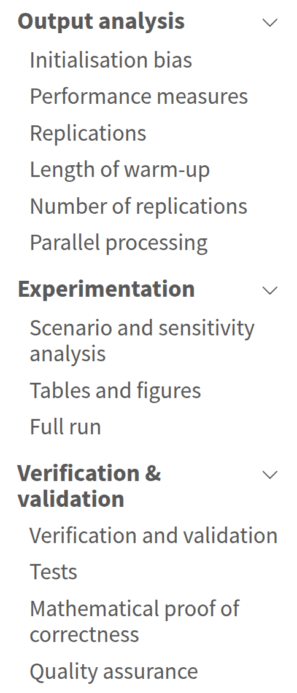
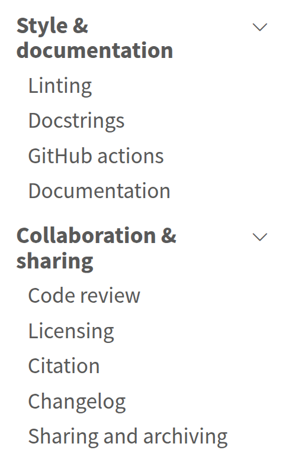
Setup
Version control
Relevant guidelines:
- NHS Levels of RAP (🥉): Code is version controlled.
Version control
Version control allows you to track files over time: what changes, when, and by whom.
- Roll back if a change breaks the model.
- Link results to specific versions of code.
- Supports collaboration and sharing.
Most popular: GitHub
Version control: GitHub
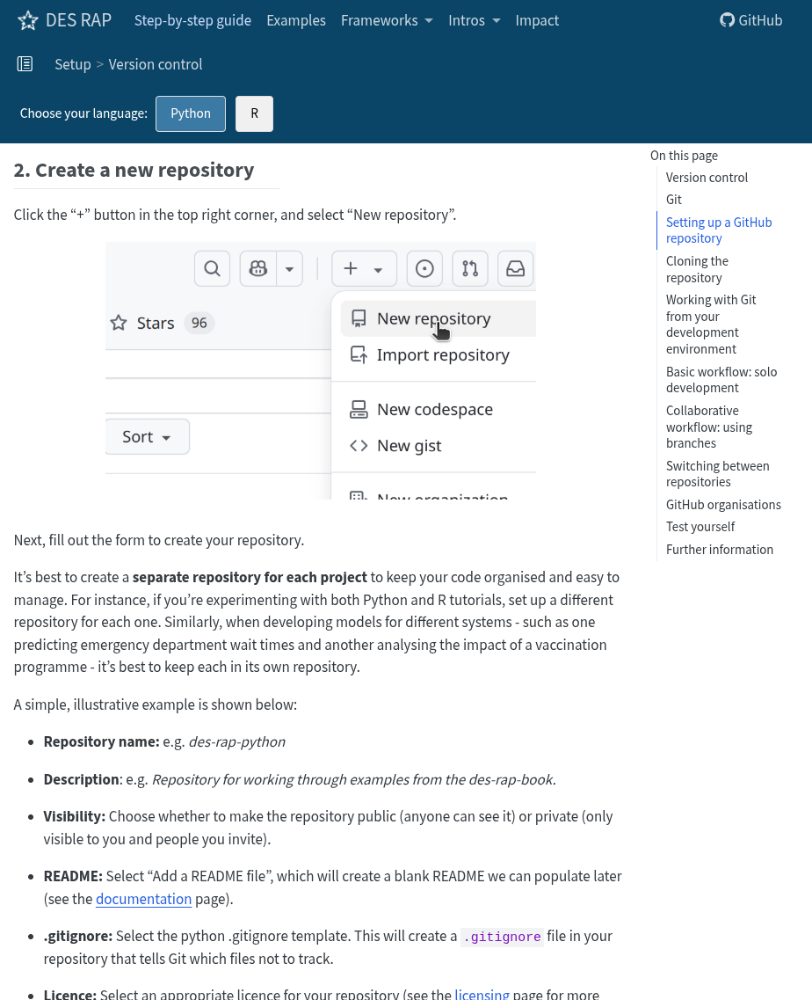
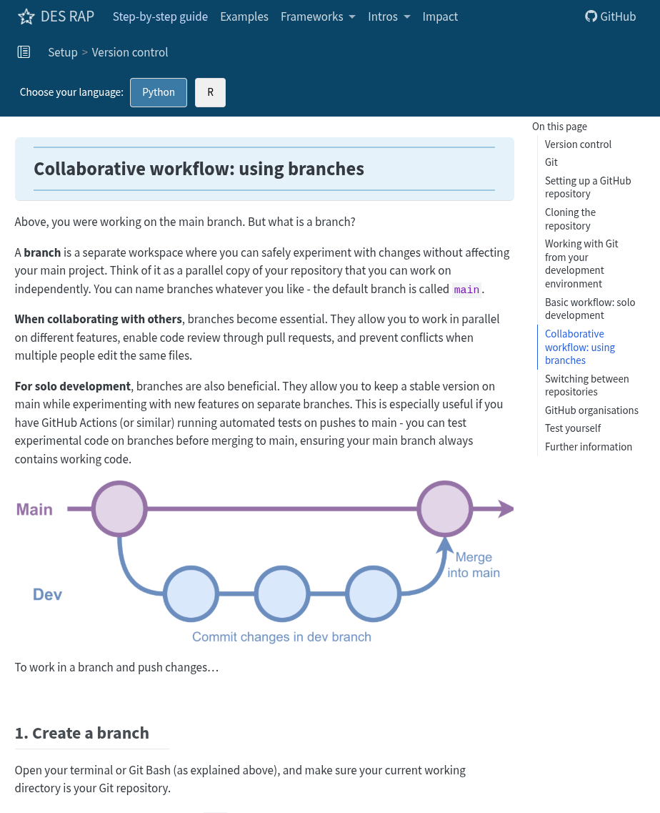
Environments
Relevant guidelines:
- STARS Reproducibility Recommendations: List dependencies and versions.
- NHS Levels of RAP (🥈): Repository includes dependency information.
Environments
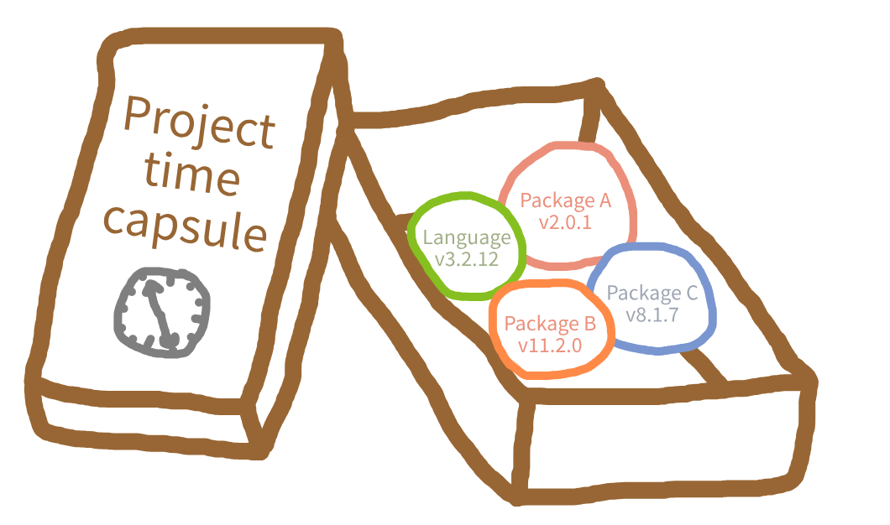
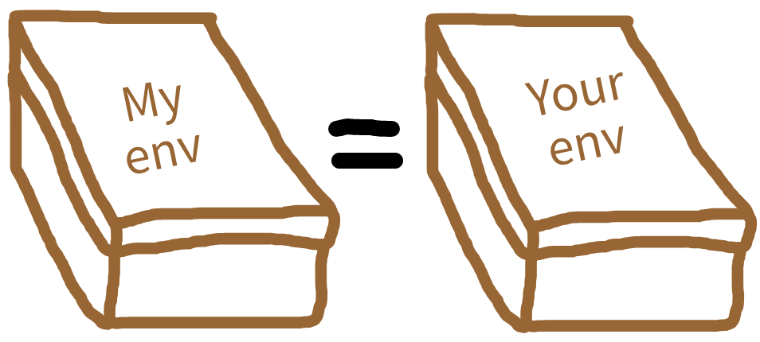
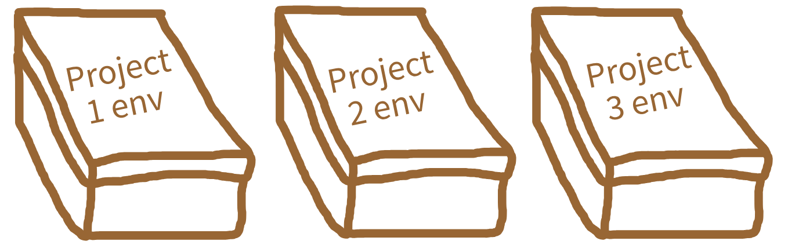
Environments: Python
| Tool | Python version | Dependency files | Speed |
|---|---|---|---|
venv |
❌ No | requirements.txt |
⚡ Fast |
conda |
✅ Yes | environment.yml |
🐢 Slow |
mamba |
✅ Yes | environment.yml |
🚀 Very fast |
poetry |
⚠️ Partial | pyproject.toml & poetry.lock |
🐢 Slow |
uv |
✅ Yes | pyproject.toml & uv.lock |
✅ Yes |
Key question: Does the tool manage the Python version?
Environments: Python
Environments: R
| Tool | Install + switch between R? | Packages? |
|---|---|---|
rig |
✅ Yes | ❌ No |
renv |
❌ No | ✅ Yes |
rv (in development) |
❌ No | ✅ Yes |
Environments: R
renv.lock:
{
"R": {
"Version": "4.4.1",
"Repositories": [
{
"Name": "CRAN",
"URL": "https://cloud.r-project.org"
}
]
},
"Packages": {
"dplyr": {
"Package": "dplyr",
"Version": "1.1.4",
"Source": "Repository",
"Repository": "CRAN",
"Hash": "aaaaaaaaaaaaaaaaaaaaaaaaaaaaaaaa"
},
"future": {
"Package": "future",
"Version": "1.34.0",
"Source": "Repository",
"Repository": "CRAN",
"Hash": "bbbbbbbbbbbbbbbbbbbbbbbbbbbbbbbb"
},
"cli": {
"Package": "cli",
"Version": "3.6.2",
"Source": "Repository",
"Repository": "CRAN",
"Hash": "cccccccccccccccccccccccccccccccc"
},
"glue": {
"Package": "glue",
"Version": "1.8.0",
"Source": "Repository",
"Repository": "CRAN",
"Hash": "dddddddddddddddddddddddddddddddd"
},
"lifecycle": {
"Package": "lifecycle",
"Version": "1.0.4",
"Source": "Repository",
"Repository": "CRAN",
"Hash": "eeeeeeeeeeeeeeeeeeeeeeeeeeeeeeee"
},
"magrittr": {
"Package": "magrittr",
"Version": "2.0.3",
"Source": "Repository",
"Repository": "CRAN",
"Hash": "ffffffffffffffffffffffffffffffff"
},
"pillar": {
"Package": "pillar",
"Version": "1.9.0",
"Source": "Repository",
"Repository": "CRAN",
"Hash": "11111111111111111111111111111111"
},
"rlang": {
"Package": "rlang",
"Version": "1.1.4",
"Source": "Repository",
"Repository": "CRAN",
"Hash": "22222222222222222222222222222222"
},
"tibble": {
"Package": "tibble",
"Version": "3.2.1",
"Source": "Repository",
"Repository": "CRAN",
"Hash": "33333333333333333333333333333333"
},
"tidyselect": {
"Package": "tidyselect",
"Version": "1.2.1",
"Source": "Repository",
"Repository": "CRAN",
"Hash": "44444444444444444444444444444444"
},
"vctrs": {
"Package": "vctrs",
"Version": "0.6.5",
"Source": "Repository",
"Repository": "CRAN",
"Hash": "55555555555555555555555555555555"
},
"digest": {
"Package": "digest",
"Version": "0.6.36",
"Source": "Repository",
"Repository": "CRAN",
"Hash": "66666666666666666666666666666666"
},
"globals": {
"Package": "globals",
"Version": "0.16.3",
"Source": "Repository",
"Repository": "CRAN",
"Hash": "77777777777777777777777777777777"
},
"listenv": {
"Package": "listenv",
"Version": "0.9.1",
"Source": "Repository",
"Repository": "CRAN",
"Hash": "88888888888888888888888888888888"
},
"parallelly": {
"Package": "parallelly",
"Version": "1.38.0",
"Source": "Repository",
"Repository": "CRAN",
"Hash": "99999999999999999999999999999999"
}
}
}Structuring as a package
Relevant guidelines:
- NHS Levels of RAP (🥈): Code is well-organised following standard directory format.
- NHS Levels of RAP (🥇): Code is fully packaged.
Structuring as a package
Package: Structured collection of code, data and docs.
Easy to distribute, install and reuse across projects.
Structuring as a package: why?
- Use the model anywhere after install.
- Encourages a standard project structure.
- Separates model and analysis code.
- Improves maintainability and reuse.
- Supports automated testing.
- R: Workflow helps like
usethisfor automatic set-up of licences, READMEs, tests, vignettes, GitHub Actions and more.
Structuring as a package: downside
😞: More set-up and learning at the start
Structuring as a package
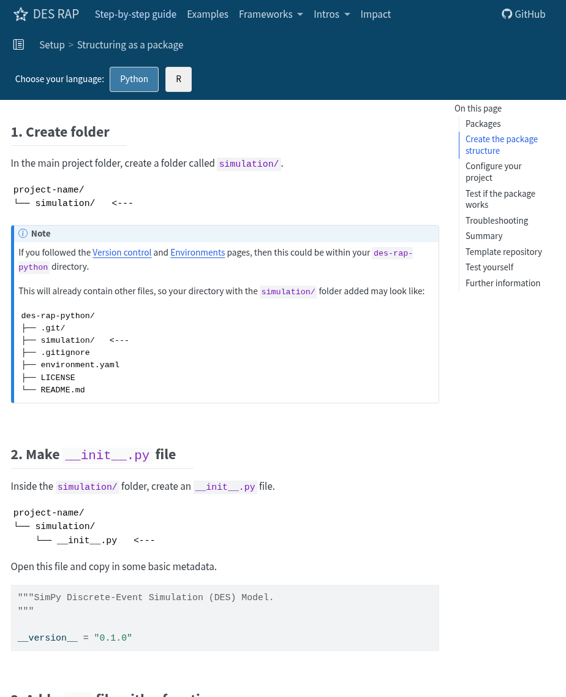
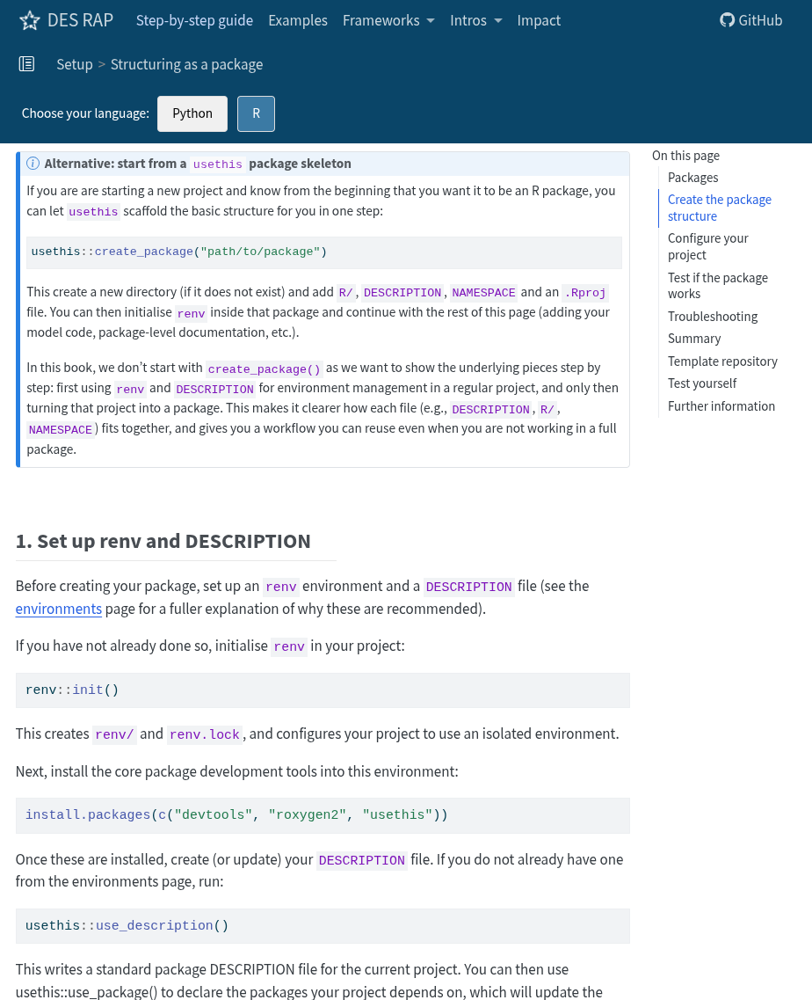
Structuring as a package
Code organisation
Relevant guidelines:
- STARS Reproducibility Recommendations: Minimise code duplication.
- NHS Levels of RAP (🥈): Reusable functions and/or classes are used where appropriate.
Code organisation

Code organisation: functions
Python:
def estimate_wait_time(queue_length, avg_service_time):
"""
Estimate the total wait time in a queue.
Parameters
----------
queue_length : int
Number of people currently ahead in the queue.
avg_service_time : float
Average service time per person.
Returns
-------
float
Estimated total wait time.
"""
return queue_length * avg_service_time
# There are 4 patients ahead, average service time is 15 minutes
print(estimate_wait_time(queue_length=4, avg_service_time=15))R:
#' Estimate the total wait time in a queue.
#'
#' @param queue_length Numeric. Number of people currently ahead in the queue.
#' @param avg_service_time Numeric. Average service time per person.
#'
#' @return Estimated total wait time.
#' @export
estimate_wait_time <- function(queue_length, avg_service_time) {
queue_length * avg_service_time
}
# There are 4 patients ahead
# Average service time is 15 minutes
print(
estimate_wait_time(
queue_length = 4L, avg_service_time = 15L
)
)Code organisation: classes (Python)
class Patient:
"""
Represents a patient in a healthcare system queue.
Attributes
----------
patient_id : int
Unique identifier for the patient.
arrival_time : float
Recorded arrival time for the patient.
status : str
Current status of the patient.
"""
def __init__(self, patient_id, arrival_time):
"""
Initialise a new Patient instance.
Parameters
----------
patient_id : int
Unique identifier for the patient.
arrival_time : float
Recorded arrival time for the patient.
"""
self.patient_id = patient_id
self.arrival_time = arrival_time
self.status = "waiting"
def admit(self):
"""
Mark the patient as admitted.
"""
self.status = "admitted"
def discharge(self):
"""
Mark the patient as discharged.
"""
self.status = "discharged"
alice = Patient(patient_id=1, arrival_time=3)
print(alice.status)Model inputs
Input modelling
Sample from distributions in DES. To choose:
- Identify candidate distributions.
- Fit distributions to your data and compare goodness-of-fit.
Recommend: distfit (Python) and fitdistrplus (R)
Input modelling
Recommend: distfit (Python) and fitdistrplus (R)
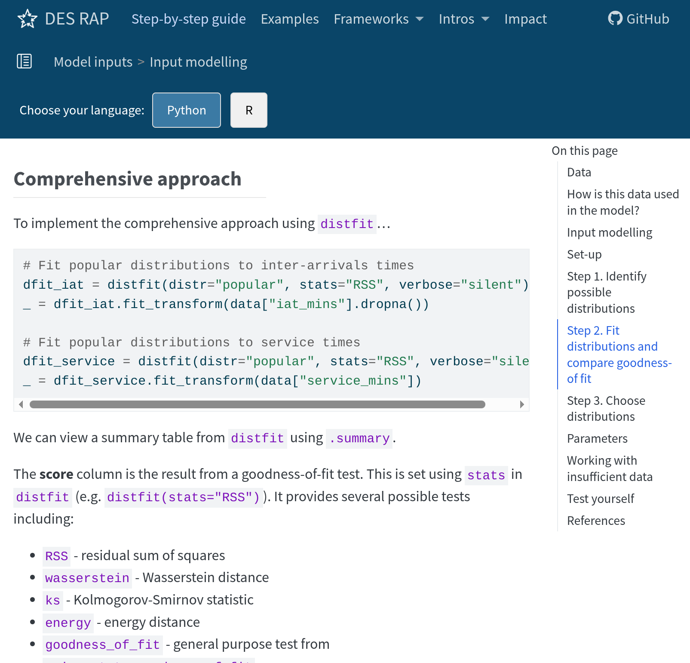
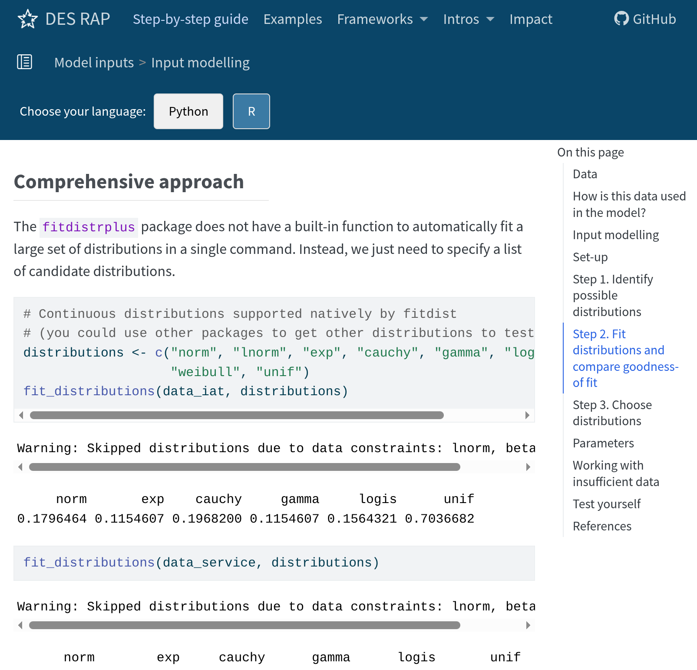
Input modelling
Recommend: distfit (Python) and fitdistrplus (R)
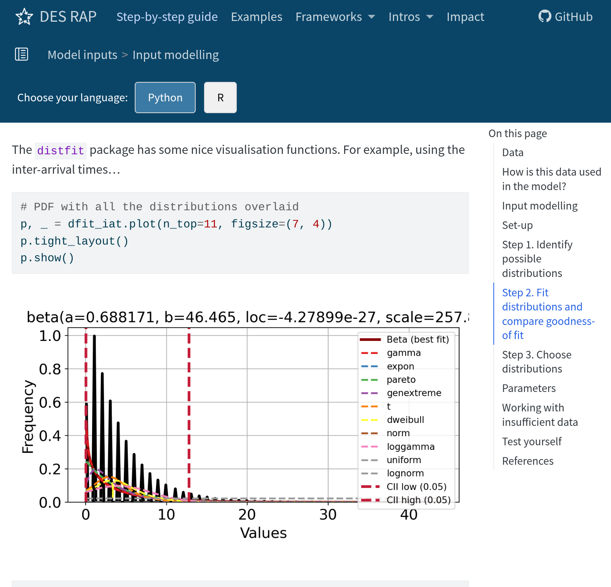
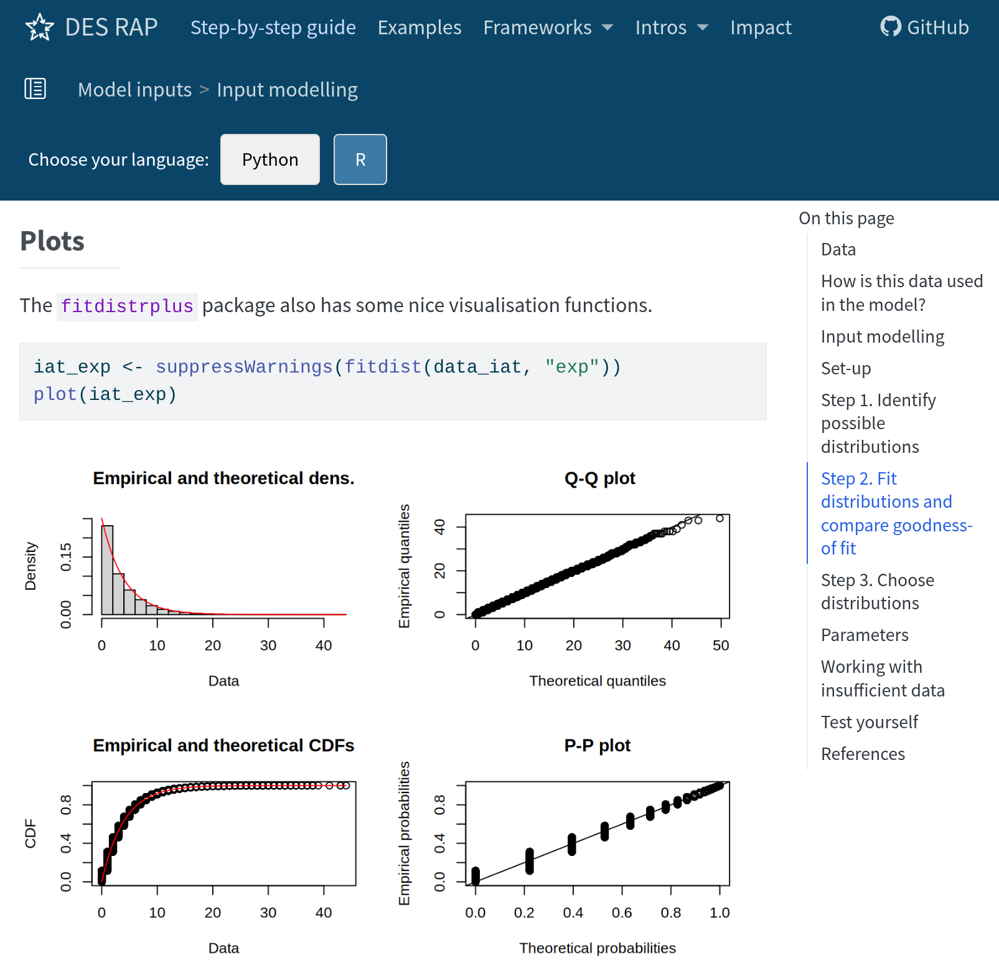
Input data management
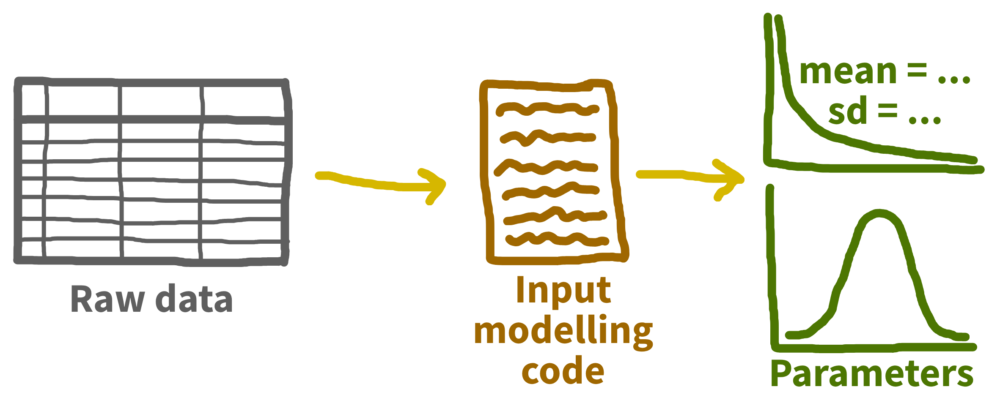
Input data management
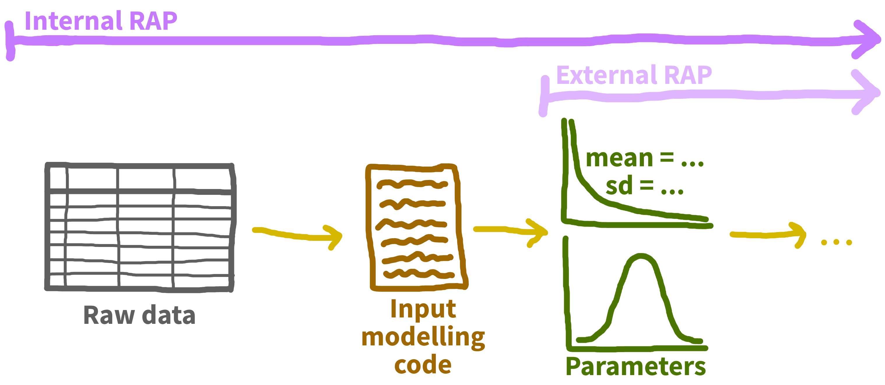
Parameters
Relevant guidelines:
- STARS Reproducibility Recommendations: Avoid hard-coded parameters.
Parameters
What not to do: hardcoding parameters into model code.
- Requires manually changing parameter values in the script.
- May end up with duplicate scripts.
Parameters
A slight improvement: global parameters.
- ✅ No longer hard coded.
- ✅ Centralised.
- ❌ Still inflexible.
- ❌ Not scalabale.
Parameters
Recommendation:
- Group parameters into a dedicated object.
- Pass this object explicitly to your model.
- ✅ Clear parameter sets.
- ✅ No global variables.
- ✅ Fewer inputs.
Either within script or from a file.
Wide range of possibilities. Some examples…
Parameters
Python class example:
class Parameters:
"""
Parameter class.
"""
def __init__(
self, interarrival_time=5, consultation_time=20, transfer_prob=0.3
):
"""
Initialise Parameters instance.
Parameters
----------
interarrival_time : float
Time between arrivals (minutes).
consultation_time : float
Length of consultation (minutes).
transfer_prob : float
Transfer probability (0-1).
"""
self.interarrival_time = interarrival_time
self.consultation_time = consultation_time
self.transfer_prob = transfer_probParameters
Python JSON example:
{
"simulation_parameters": {
"adult_interarrival": {
"class_name": "Exponential",
"params": {
"mean": 5.0
}
},
"adult_consultation": {
"class_name": "Exponential",
"params": {
"mean": 20.0
}
},
"adult_transfer": {
"class_name": "Exponential",
"params": {
"mean": 0.3
}
},
"child_interarrival": {
"class_name": "Exponential",
"params": {
"mean": 7.0
}
},
"child_consultation": {
"class_name": "Exponential",
"params": {
"mean": 15.0
}
},
"child_transfer": {
"class_name": "Exponential",
"params": {
"mean": 0.2
}
},
"elderly_interarrival": {
"class_name": "Exponential",
"params": {
"mean": 10.0
}
},
"elderly_consultation": {
"class_name": "Exponential",
"params": {
"mean": 30.0
}
},
"elderly_transfer": {
"class_name": "Exponential",
"params": {
"mean": 0.5
}
}
}
}class CreateParameters:
"""
Store simulation parameters, combining those loaded from a JSON file with
values defined in the class.
"""
def __init__(self, json_file, number_of_runs=10):
"""
Parameters
----------
json_file : str
Path to JSON file containing simulation parameters.
number_of_runs : int, optional
Number of simulation runs (default is 10).
"""
# Import parameters from JSON file
with open(json_file, "r", encoding="utf-8") as f:
json_content = json.load(f)
params = json_content["simulation_parameters"]
# Assign file-based parameters as attributes
for key, value in params.items():
setattr(self, key, value)
# Add class-defined parameters
self.number_of_runs = number_of_runs
param = CreateParameters(os.path.join(data_path, "example_parameters.json"))Parameter validation
Either separate function or part of class.
Accidental creation of new parameters
Validate parameter values
Model building
Randomness
Relevant guidelines:
- STARS Reproducibility Recommendations: Control randomness.
Randomness

Randomness: Python
numpy
sim-tools
sim-tools can help with problem of shared random number generators.
Randomness: Python
sim-tools can help with problem of shared random number generators.
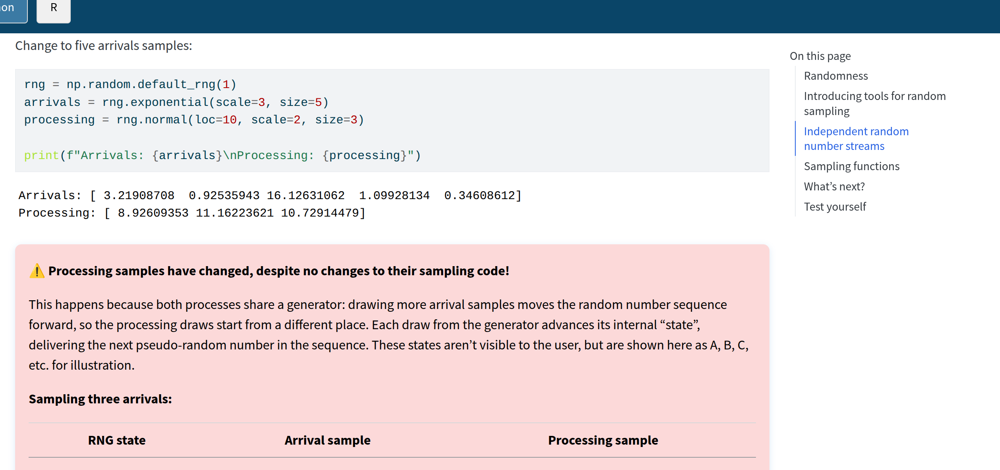
Randomness: R
stats
simEd (slower)
Building a DES model
We guide through creating incrementally…
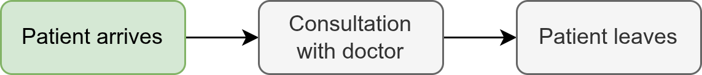
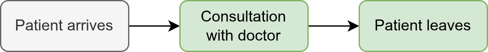
simpy (Python) and simmer (R)
Initialisation bias
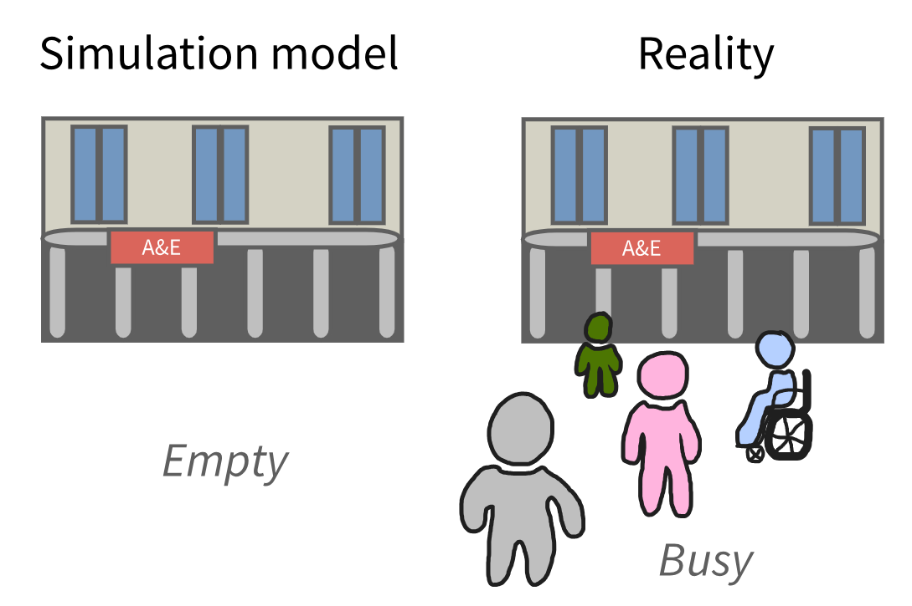
Initialisation bias
Two main strategies:
- Initial conditions: start with some entities/resources.
- Warm-up period: run model until it reaches a steady state.
Initialisation bias
Time series inspection approach.

Initialisation bias
Time series inspection approach.
How?
- Record performance measures at regular intervals.
- Run multiple replications and long run length.
Replications
Replications
Confidence interval method - manual or automated.
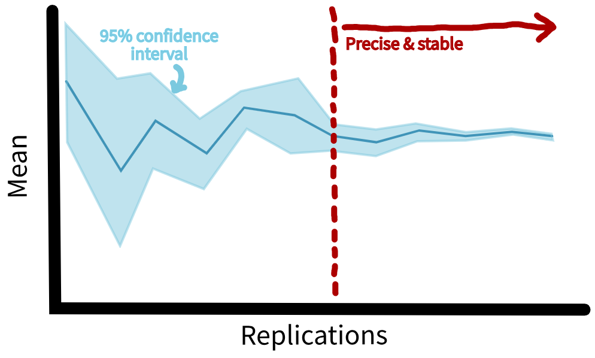
Parallel processing
Relevant guidelines:
- STARS Reproducibility Recommendations: Optimise model run time.
Parallel processing
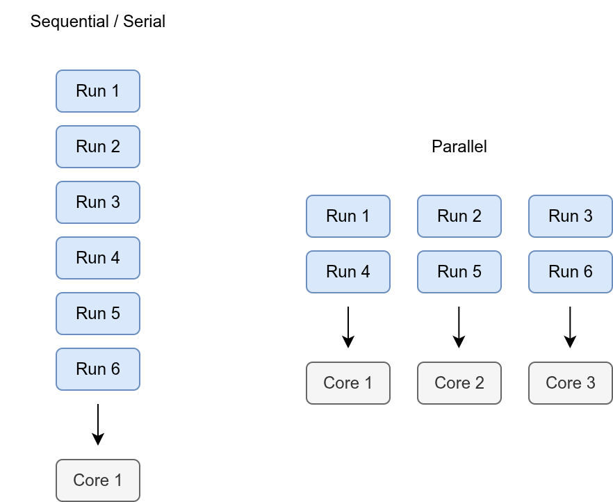
Performance measures
- Total arrivals
- Mean wait time
- Mean time with resource
- Mean resource utilisation
- Mean queue length
- Mean time in system
- Mean number of patients in system
- Backlogged patient count
- Backlogged patient mean wait time
Logging
Relevant guidelines:
- NHS Levels of RAP (🥈): Logs are automatically recorded by the pipeline to ensure outputs are as expected.
Logging (Python)
print() statements.
Logging class created with logging and rich packages.
Example use:
Output to console or save to file.
Logging (R)
Run simmer with verbose = TRUE:
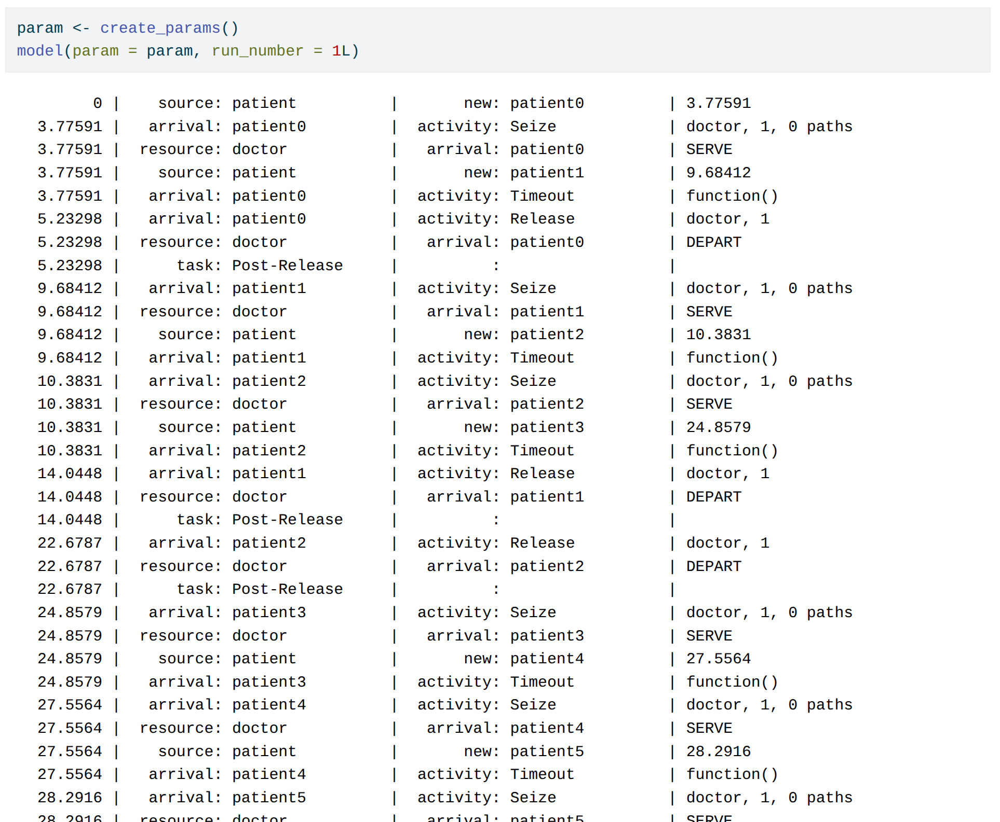
Logging (R)
Custom logs using simmer::log_():
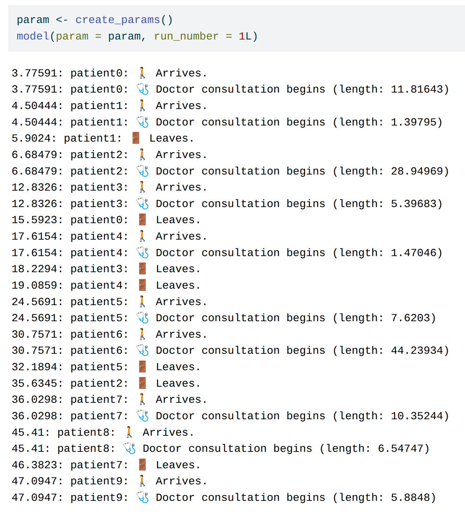
Modular model structure
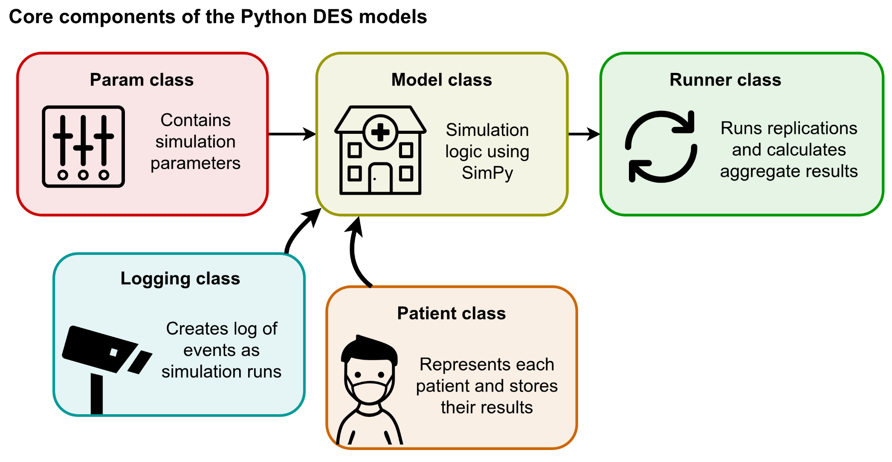
Modular model structure
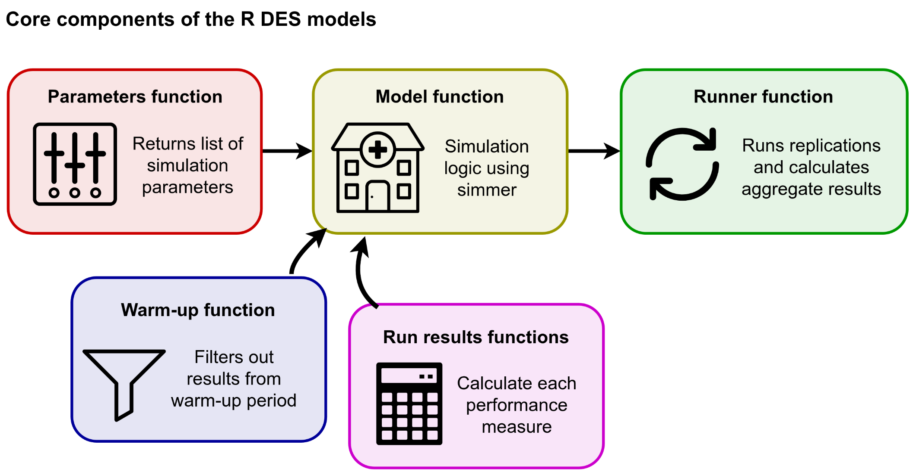
Experimentation
Scenario and sensitivity analysis
Relevant guidelines:
- STARS Reproducibility Recommendations (⭐): Provide code for all scenarios and sensitivity analyses.
- STARS Reproducibility Recommendations: Save outputs to a file.
- STARS Reproducibility Recommendations: Avoid excessive output files.
- STARS Reproducibility Recommendations: Address large file sizes.
Scenario and sensitivity analysis
Scenario analysis: Set of pre-defined situations plausible and relevant to problem being studied. Purpose is to understand how system operates under different scenarios.
Sensitivity analysis: Assess impact of parameter changes on outcomes. Purpose is to understand how uncertainty in inputs affects the model.
Scenario and sensitivity analysis
Two important things to remember:
1. Run scenarios programmatically. For example:
results <- list()
# Loop through doctor counts 3-6, running the simulation
for (i in 3L:6L) {
param <- create_params(number_of_doctors = i)
result <- runner(param = param)[["run_results"]]
# Add scenario information to the results, then save to list
result["number_of_doctors"] <- i
results[[length(results) + 1L]] <- result
}
# Combine results into a single dataframe
scenario_results <- do.call(rbind, results)
# Show as interactive table
kable(scenario_results) |> scroll_box(height = "400px")Scenario and sensitivity analysis
Two important things to remember:
1. Run scenarios programmatically.
2. Share your scenario code.
Tables and figures
Relevant guidelines:
- STARS Reproducibility Recommendations (⭐): Include code to generate the tables, figures, and other reported results.
- STARS Reproducibility Recommendations: Save outputs to a file.
Key point: share code!
Full run
Relevant guidelines:
- STARS Reproducibility Recommendations (⭐): Ensure model parameters are correct.
- NHS Levels of RAP (🥈): Outputs are produced by code with minimal manual intervention.
Full run
main.py/main.R.
Suitable if everything in .py/.R files (i.e. no .ipynb/.Rmd). Write a main function that imports all necessary code and runs pipeline.
Bash
Can run a mixture of file types (e.g., .py, .R, .ipynb, .Rmd). Write shell script that executes files. May combine with main.py/main.R.
Makefile
Track which outputs depend on which inputs, and only re-run steps when the inputs have changed
Snakemake
Tool that builds on Makefile, supporting very complex pipelines and lots of tools and languages.
Full run
main.py/main.R.
Suitable if everything in .py/.R files (i.e. no .ipynb/.Rmd). Write a main function that imports all necessary code and runs pipeline.
Bash
Can run a mixture of file types (e.g., .py, .R, .ipynb, .Rmd). Write shell script that executes files. May combine with main.py/main.R.
Makefile
Track which outputs depend on which inputs, and only re-run steps when the inputs have changed
Snakemake
Tool that builds on Makefile, supporting very complex pipelines and lots of tools and languages.
Full run
Full run
#!/usr/bin/env bash
# Get the conda environment's jupyter path
CONDA_JUPYTER=$(dirname "$(which python)")/jupyter
run_notebook() {
local nb="$1"
echo "🏃 Running notebook: $nb"
if "${CONDA_JUPYTER}" nbconvert --to notebook --inplace --execute \
--ClearMetadataPreprocessor.enabled=True \
--ClearMetadataPreprocessor.clear_notebook_metadata=True \
"$nb"
then
echo "✅ Successfully processed: $nb"
else
echo "❌ Error processing: $nb"
fi
echo "-------------------------"
}
if [[ -n "$1" ]]; then
run_notebook "$1"
else
for nb in notebooks/*.ipynb; do
run_notebook "$nb"
done
fiVerification and validation
Verification and validation
Verification: The process of checking that the simulation model correctly implements the intended conceptual model.
It involves checking that the model’s logic, structure and parameters are implemented as planned and free from coding errors.
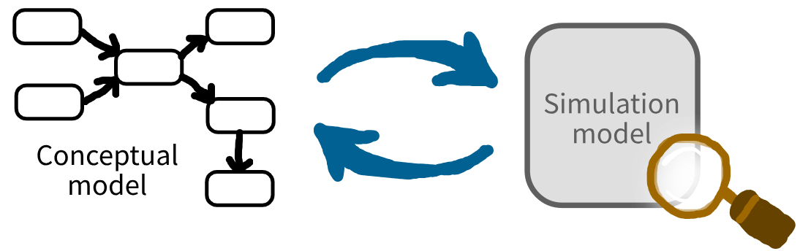
Verification and validation
Validation: The process of checking whether the simulation model is a sufficiently accurate representation of your real system.
It involves comparing the model’s inputs, behaviour and results to the real system
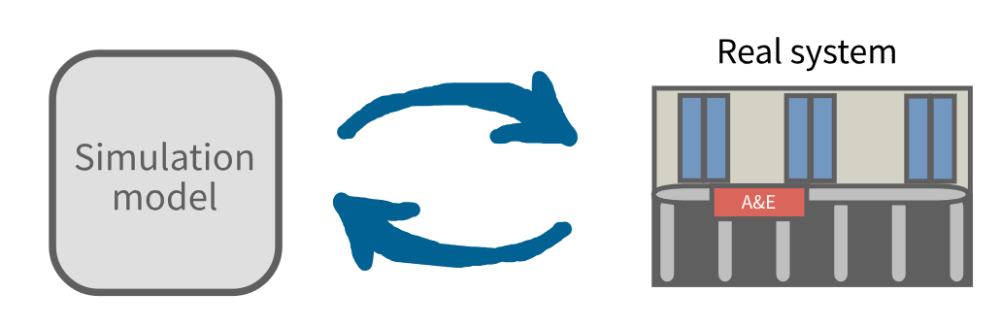
Verification and validation
# Verification and validation checklist
This checklist is from: Heather, A., Monks, T., Mustafee, N., Harper, A., Alidoost, F., Challen, R., & Slater, T. (2025). DES RAP Book: Reproducible Discrete-Event Simulation in Python and R. https://github.com/pythonhealthdatascience/des_rap_book. https://doi.org/10.5281/zenodo.17094155.
## Verification
Desk checking
* [ ] Systematically check code.
* [ ] Keep documentation complete and up-to-date.
* [ ] Maintain an environment with all required packages.
* [ ] Lint code.
* [ ] Get code review.
Debugging
* [ ] Write tests - they'll help for spotting bugs.
* [ ] Use GitHub issues to record bugs as they arise, so they aren't forgotten and are recorded for future reference.
Execution tracing
* [ ] Add logging or tracing output around key decisions. Run the model for a short, controlled period and manually check the trace against your conceptual model.
Assertion checking
* [ ] Add checks in the model which cause errors if something doesn't look right.
* [ ] Write tests which check that assertions hold true.
Special input testing
* [ ] If there are input variables with explicit limits, design boundary value tests to check the behaviour at, just inside, and just outside each boundary.
* [ ] Write stress tests which simulate worst-case load and ensure model is robust under heavy demand.
* [ ] Write tests with little or no activity/waits/service.
Bottom-up testing
* [ ] Write unit tests for each individual component of the model.
* [ ] Once individual parts work correctly, combine them and test how they interact - this can be via integration testing or functional testing.
Regression testing
* [ ] Write tests early.
* [ ] Run tests regularly (locally or automatically via. GitHub actions).
Mathematical proof of correctness
* [ ] For parts of the model where theoretical results exist (like an M/M/s queue), compare simulation outputs with results from mathematical formulas.
## Validation
Conceptual model validation
* [ ] Document and justify all modeling assumptions.
* [ ] Review the conceptual model with people familiar with the real system to assess completeness and accuracy.
Input data validation
* [ ] Check the datasets used - screen for outliers, determine if they are correct, and if the reason for them occurring should be incorporated into the simulation.
* [ ] Ensure you have performed appropriate input modelling steps when choosing your distributions.
Graphical comparison
* [ ] Create time-series plots and distributions of key results (e.g., daily patient arrivals, resource utilisation, waiting times) for both the model and the actual system, and compare the graphs to assess whether patterns and trends are similar.
Statistical comparison
* [ ] Collect real system data on key performance measures (e.g., wait times, lengths of stay, throughput) and compare with model outputs statistically using appropriate tests.
Turing test
* [ ] Collect matching sets of model output and real system, remove identifying labels, and present them to a panel of experts. Record whether experts can distinguish simulation outputs from real data. Use their feedback on distinguishing features to further improve the simulation.
Predictive validation
* [ ] Use historical arrival data, staffing schedules, treatment times, or other inputs from a specific time period to drive your simulation. Compare the simulation's predictions for that period (e.g., waiting times, bed occupancy) against the real outcomes for the same period.
* [ ] Consider varying the periods you validate on—year-by-year, season-by-season, or even for particular policy changes or events—to detect strengths or weaknesses in the model across different scenarios.
* [ ] Use graphical comparisons (e.g., time series plots) or statistical measures (e.g., goodness-of-fit, mean errors, confidence intervals) to assess how closely the model matches reality - see below.
Animation visualisation
* [ ] Create an animation to help with validation (as well as communication and reuse).
Comparison testing
* [ ] If you have multiple models of the same system, compare them!
Face validation
* [ ] Present key simulation outputs and model behaviour to people such as: project team members; intended users of the model (e.g., healthcare analysts, managers); people familiar with the real system (e.g., clinicians, frontline staff, patient representatives). Ask for their subjective feedback on whether the model and results "look right". Discuss specific areas, such as whether performance measures (e.g., patient flow, wait times) match expectations under similar conditions.
Experimentation validation
* [ ] Use a warm-up period.
* [ ] Use statistical methods to determine sufficient run length and number of replications.
* [ ] Perform sensitivity analysis to test how changes in input parameters affect outputs.
Cross validation
* [ ] Search for similar simulation studies and compare the key assumptions, methods and results. Discuss discrepancies and explain reasons for different findings or approaches. Use insights from other studies to improve or validate your own model.Tests
Relevant guidelines:
- NHS Levels of RAP (🥈): Pipeline includes a testing framework (unit tests, back tests).
Tests
Guidance in DES RAP Book - and in our other resource:
https://pythonhealthdatascience.github.io/stars-testing-intro/
Tests
Stuck for ideas? See example repositories
- Python M/M/s model - https://github.com/pythonhealthdatascience/pydesrap_mms
- R M/M/s model - https://github.com/pythonhealthdatascience/rdesrap_mms
- Python stroke model - https://github.com/pythonhealthdatascience/pydesrap_stroke
- R stroke model - https://github.com/pythonhealthdatascience/rdesrap_stroke
Quality assurance
Quality assurance (QA) is the formal, systematic process of ensuring your analysis meets appropriate standards of quality and is suitable for its intended use. It means planning how you will check the work, carrying out those checks, and keeping clear evidence of what you did.

Quality assurance
Example: QA in the New Hospital Programme (The Strategy Unit).
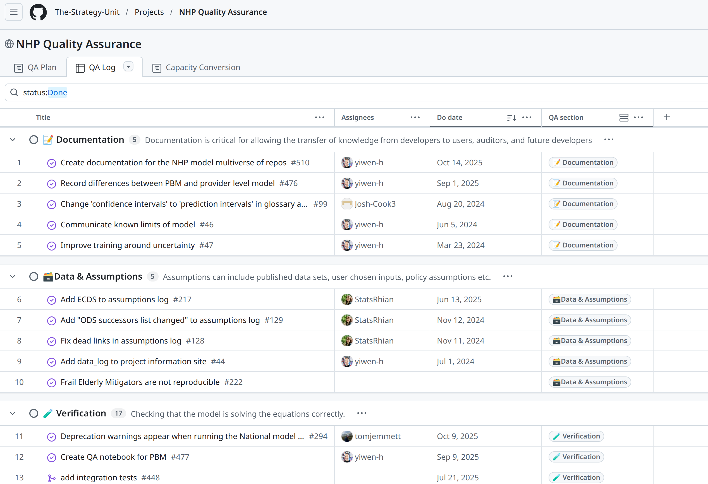
Style and documentation
Linting
Relevant guidelines:
- NHS Levels of RAP (🥈): Code adheres to agreed coding standards (e.g PEP8, style guide for Pyspark).
Linting: style guides
Set of rules and conventions for writing code.
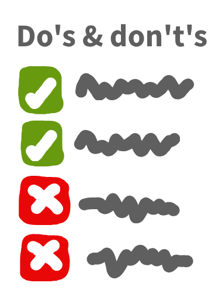
Linting: style guides
Set of rules and conventions for writing code.
Popular examples in Python:
Popular examples in R:
Linting: linters
Analyse code for possible errors and style issues.

Linting: linters
Analyse code for possible errors and style issues.
Linting: linters
Python: Run from the command line
R: Run from the R console
Linting: code formatters
Automatically format your code.
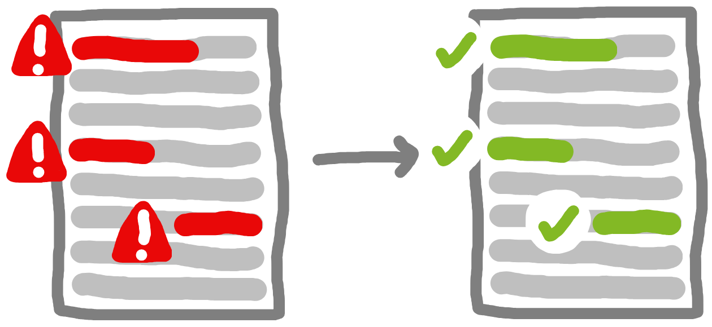
Linting: code formatters
Automatically format your code.
Linting: Quarto
Docstrings
Relevant guidelines:
- STARS Reproducibility Recommendations: Comment sufficiently.
- NHS Levels of RAP (🥈): Code is well-documented including user guidance, explanation of code structure & methodology and docstrings for functions.
Docstrings
In-line comments clarify individual lines/sections of code when the logic is otherwise unclear.
Docstrings explain the overall purpose of a code object.
Why write docstrings?
- Clarify and consistency.
- Maintainability and reproducibility.
- Documentation websites.
- Interactive help systems.
Docstrings: Python
Popular docstring styles: numpydoc and google style.
NumPy style:
def estimate_wait_time(queue_length, avg_service_time):
"""
Estimate the total wait time for all customers in the queue.
Parameters
----------
queue_length : int or float
Number of customers currently in the queue.
avg_service_time : int or float
Average time taken to serve one customer.
Returns
-------
float
Estimated total wait time.
"""
return queue_length * avg_service_timeDocstrings: R
R docstrings always use roxygen2 style.
#' Estimate the total wait time for all customers in the queue.
#'
#' @param queue_length numeric Number of customers currently in the queue.
#' @param avg_service_time numeric Average time taken to serve one customer.
#'
#' @return numeric Estimated total wait time.
#' @export
estimate_wait_time <- function(queue_length, avg_service_time) {
queue_length * avg_service_time
}GitHub actions
Relevant guidelines:
- NHS Levels of RAP (🥇): Repository automatically runs tests etc. via CI/CD or a different integration/deployment tool e.g. GitHub Actions.
GitHub actions
- 1
- Name of workflow.
- 2
-
Events that trigger workflow e.g.,
push,pull_request,workflow_dispatch. - 3
- One or multiple jobs, can run sequentially or in parallel.
- 4
-
Operating system e.g.,
ubuntu-latest,windows-latest,macos-latest - 5
- Access granted to workflow.
- 6
- Ordered tasks in a job.
GitHub actions
Use GitHub actions for:
- Tests
- Test coverage
- Linting
- Documentation
And more!
GitHub actions: tests (Python)
name: tests
on:
push:
branches: [main]
workflow_dispatch:
jobs:
tests:
runs-on: ubuntu-latest
steps:
- name: Check out repository
uses: actions/checkout@v4
- name: Install python and dependencies
uses: actions/setup-python@v4
with:
python-version: '3.13'
cache: 'pip'
- name: Install requirements
run: pip install -r requirements.txt
- name: Run tests
run: pytestGitHub actions: tests (R)
If structured as a package:
Example:
name: R-CMD-check.yaml
on:
push:
branches: [main]
workflow_dispatch:
permissions: read-all
jobs:
R-CMD-check:
runs-on: ubuntu-latest
env:
GITHUB_PAT: ${{ secrets.GITHUB_TOKEN }}
R_KEEP_PKG_SOURCE: yes
steps:
- uses: actions/checkout@v4
- uses: r-lib/actions/setup-pandoc@v2
- uses: r-lib/actions/setup-r@v2
with:
r-version: 'release'
use-public-rspm: true
- uses: r-lib/actions/setup-r-dependencies@v2
with:
extra-packages: any::rcmdcheck
needs: check
- uses: r-lib/actions/check-r-package@v2Documentation
Relevant guidelines:
- STARS Reproducibility Recommendations: Include run instructions.
- STARS Reproducibility Recommendations: State run times and machine specifications.
- NHS Levels of RAP (🥉): Repository includes a README.md file (or equivalent) that clearly details steps a user must follow to reproduce the code (use NHS Open Source Policy section on Readmes as a guide).
- NHS Levels of RAP (🥈): Code is well-documented including user guidance, explanation of code structure & methodology and docstrings for functions.
Documentation: README.md
✔️ Title
✔️ Summary - describe project purpose and context.
✔️ Authors - named contributors, their ORCIDs, and contact details.
✔️ Installation - steps for setting up the environment.
✔️ How to run the model - basic instructions for executing the simulation.
✔️ Reproduction instructions - specific instructions on how to generate results from your report/publication.
✔️ Inputs - description of the input data.
✔️ Project structure - brief guide to main files and folders.
✔️ Run time and machine specifications - typical simulation duration (with computer requirements where relevant).
✔️ Citation - instructions for citing the project/repository.
✔️ Licence - state the license used and point to the
LICENSEfile.✔️ Funding and affiliations - relevant sources of funding, support and affiliation.
✔️ Acknowledgements - credit external code or resources used, inspiration from other projects, and any assistance from individuals, large language models (e.g., ChatGPT, Perplexity) or tools that contributed to the work.
Documentation: README.md
| Badge | Markdown |
|---|---|
[](https://github.com/pythonhealthdatascience/des_rap_book/blob/main/LICENSE) |
|
[](https://doi.org/10.5281/zenodo.17094155) |
|
[](https://orcid.org/0000-0002-6596-3479) |
|
 |
|
[](https://github.com/pythonhealthdatascience/pydesrap_stroke/actions/workflows/lint.yaml) |
Documentation: README.md
All Contributors - https://allcontributors.org/
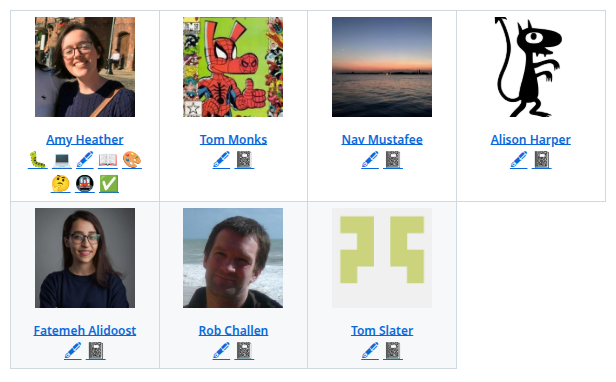
Documentation: CONTRIBUTING.md
More technical information on working with the repository - for people who might join you in working on the code, using the code, and for yourself in the future.
Example of things to cover:
✔️ Tests - how to run tests.
✔️ Code style - what style guide(s) are followed.
✔️ Linting - how and which linters to run.
✔️ Releases - if keeping a changelog and making releases,
instructions on how to do that, what to update for a new release, etc.✔️ Contributing - if people come across the repository and wish to contribute or make suggestions, explain how (e.g., GitHub issue, fork, email, etc.).
Documentation: Website
Documentation: Website
Collaboration and sharing
Code review
Relevant guidelines:
- NHS Levels of RAP (🥉): Code has been peer reviewed.
Code review
Check reproducibility and improve code quality.
Recommend doing regularly during development - if possible!
Code review
Review pull requests:

Code review
Review pull requests:
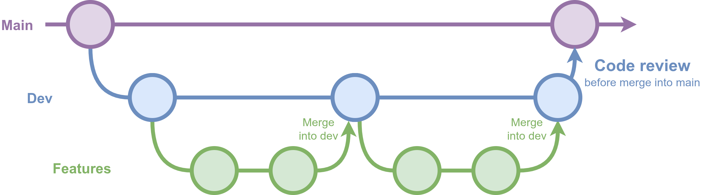
Code review
Use GitHub issues.
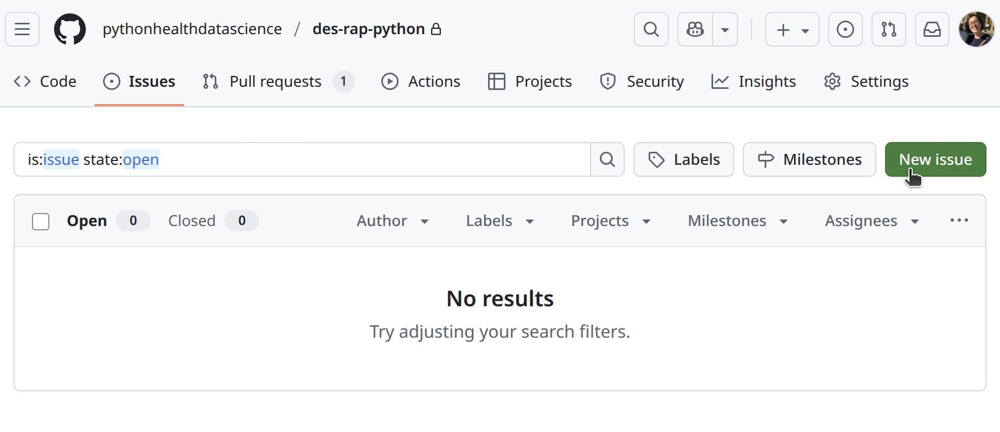
Cool things: (1) issue templates, (2) checklists, (3) sub-issues, (4) GitHub projects.
Code review
If you don’t have anyone internal who can review your code, there are other options…
- Generative AI tools
- Online communities
Licensing
Relevant guidelines:
- STARS Reproducibility Recommendations (⭐): Share code with an open licence.
Licensing
A license is a text file that explains how other people are allowed to use your work.
Example - MIT license:
MIT License
Copyright (c) [year] [fullname]
Permission is hereby granted, free of charge, to any person obtaining a copy
of this software and associated documentation files (the "Software"), to deal
in the Software without restriction, including without limitation the rights
to use, copy, modify, merge, publish, distribute, sublicense, and/or sell
copies of the Software, and to permit persons to whom the Software is
furnished to do so, subject to the following conditions:
The above copyright notice and this permission notice shall be included in all
copies or substantial portions of the Software.
THE SOFTWARE IS PROVIDED "AS IS", WITHOUT WARRANTY OF ANY KIND, EXPRESS OR
IMPLIED, INCLUDING BUT NOT LIMITED TO THE WARRANTIES OF MERCHANTABILITY,
FITNESS FOR A PARTICULAR PURPOSE AND NONINFRINGEMENT. IN NO EVENT SHALL THE
AUTHORS OR COPYRIGHT HOLDERS BE LIABLE FOR ANY CLAIM, DAMAGES OR OTHER
LIABILITY, WHETHER IN AN ACTION OF CONTRACT, TORT OR OTHERWISE, ARISING FROM,
OUT OF OR IN CONNECTION WITH THE SOFTWARE OR THE USE OR OTHER DEALINGS IN THE
SOFTWARE.Licensing
No licence = no-one has permission to use your work
Licensing
For code:
Citation
- Protect yourself and collaborators.
- Encourage others to cite you.
- Ensure accurate citation.
- Provide contact information.
- Recognise contributors.
Citation: CITATION.cff
https://citation-file-format.github.io/cffinit/

Citation: CITATION.cff
# This CITATION.cff file was generated with cffinit.
# Visit https://bit.ly/cffinit to generate yours today!
cff-version: 1.2.0
title: "DES RAP Book: Reproducible Discrete-Event Simulation in Python and R"
message: >-
If you use this software, please cite it using the
metadata from this file.
type: software
authors:
- given-names: Amy
family-names: Heather
email: a.heather2@exeter.ac.uk
affiliation: University of Exeter Medical School
orcid: 'https://orcid.org/0000-0002-6596-3479'
- given-names: Tom
family-names: Monks
email: t.m.w.monks@exeter.ac.uk
affiliation: University of Exeter Medical School
orcid: http://orcid.org/0000-0003-2631-4481
- given-names: Nav
family-names: Mustafee
email: n.mustafee@exeter.ac.uk
affiliation: University of Exeter Business School
orcid: https://orcid.org/0000-0002-2204-8924
- given-names: Alison
family-names: Harper
email: a.l.harper@exeter.ac.uk
affiliation: University of Exeter Business School
orcid: https://orcid.org/0000-0001-5274-5037
- given-names: Fatemeh
family-names: Alidoost
affiliation: University of Exeter Business School
orcid: https://orcid.org/0009-0000-0252-560X
- given-names: Rob
family-names: Challen
affiliation: School of Engineering, Mathematics and Technology, University of Bristol
orcid: https://orcid.org/0000-0002-5504-7768
- given-names: Tom
family-names: Slater
affiliation: Department of Mathematics and Statistics, University of Exeter
orcid: https://orcid.org/0009-0007-0838-7499
repository-code: 'https://github.com/pythonhealthdatascience/des_rap_book'
abstract: >-
Step-by-step guide for building Python and R simulation
models as part of a reproducible analytical pipeline
(RAP).
keywords:
- reproducible
- python
- r
- simpy
- simmer
- rap
license: MIT
version: '0.5.0'
date-released: '2026-02-20'Changelog
Relevant guidelines:
- STARS Reproducibility Recommendations: Link publication to a specific version of the code.
- NHS Levels of RAP (🥇): Changes to the RAP are clearly signposted. E.g. a changelog in the package, releases etc.
Changelog
CHANGELOG.md (or NEWS.md for R packages) records changes to a project over time.
Various conventions - e.g., Keep a Changelog:
Addedfor new features.Changedfor changes in existing functionality.Removedfor now removed features.Fixedfor any bug fixes.Deprecatedfor soon-to-be-removed features.Securityin case of vulnerabilities.
Changelog
# Changelog
All notable changes to this project will be documented in this file.
The format is based on [Keep a Changelog](https://keepachangelog.com/en/1.1.0/),
and this project adheres to [Semantic Versioning](https://semver.org/spec/v2.0.0.html). Dates formatted as YYYY-MM-DD as per [ISO standard](https://www.iso.org/iso-8601-date-and-time-format.html).
## v0.2.0 - 2025-10-01
This release adds basic discrete event simulation capability, improves documentation, and corrects a key input parameter.
### Added
* Basic simulation that generates arrivals.
### Changed
* Improved the README for clarity and guidance.
### Fixed
* Fixed a bug where the default value for `service_rate` was incorrectly set to 0.5 instead of 1.0, which caused unrealistic queue times in the single-server example.
## v0.1.0 - 2025-09-23
First release of the repository, providing a minimal project structure with initial documentation.
### Added
* Initial repository structure: includes README, license, environment files.
* Project structured as a package.
* Basic simulation script with just parameter inputs.Changelog: GitHub releases

Changelog: GitHub releases
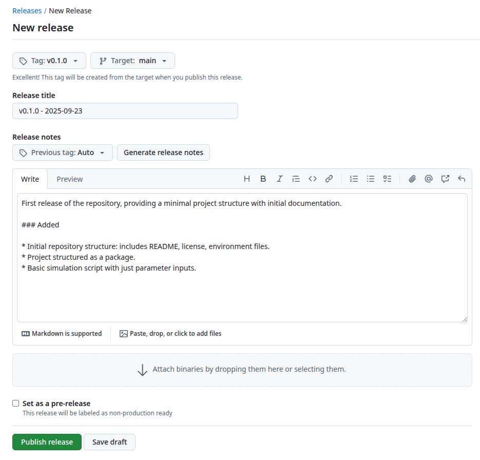
Changelog: GitHub releases
Sharing and archiving
Relevant guidelines:
- NHS Levels of RAP (🥉): Code is published in the open and linked to & from accompanying publication (if relevant).
Sharing and archiving
Reporting guidelines: for documenting model.
Sharing and archiving
Sharing guidelines: for code, data and materials.
Sharing and archiving
Archives provide long-term storage guarantees and create a DOI for your code.
Examples:
Sharing and archiving
Archives provide long-term storage guarantees and create a DOI for your code.
Examples:
- Zenodo - triggered by GitHub release:
Conclusion
Acknowledgements
The DES RAP Book was written by Amy Heather and reviewed by Nav Mustafee, Alison Harper, Tom Monks, Fatemeh Alidoost, Rob Challen and Tom Slater.

STARS is supported by the Medical Research Council [grant number MR/Z503915/1] from 1st May 2024 to 31st October 2026.
This work was also supported by the National Institute for Health and Care Research (NIHR) under the NIHR Applied Research Collaboration South West Peninsula (Grant Reference Number NIHR200167). The views expressed are those of the author(s) and not necessarily those of the NIHR or the Department of Health and Social Care.
Check out:
DES RAP Book: https://pythonhealthdatascience.github.io/des_rap_book/
Publication: https://doi.org/10.3310/nihropenres.14296.1